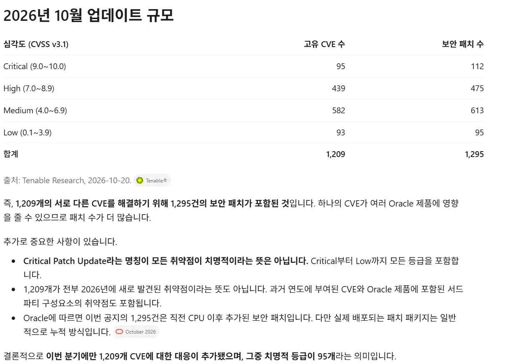

추가로 나온 취약점 패치들
node.js
Oracle Critical Patch
Oracle Critial Patch - 2026 October는 자그마치 CVE 10점짜리 6건, 9.9 7건 등의 어마어마한 취약점들 패치가 진행됨

너무많아서 요약처리한 내용
node.js 2026-10-21 보안 업데이트는 자그마치 High로 분류한 CVE 4개, Medium 3개, Low 3개임 ㅋㅋㅋㅋ
어제 php cve는 맛보기였음. 일해라 서버관리개붕이들
개붕이도 개구르는중
이번달 개발끝낸거 유지보수 계약 협상중인데
우리가 안했으면 좋갰다 시벌ㅋㅋ